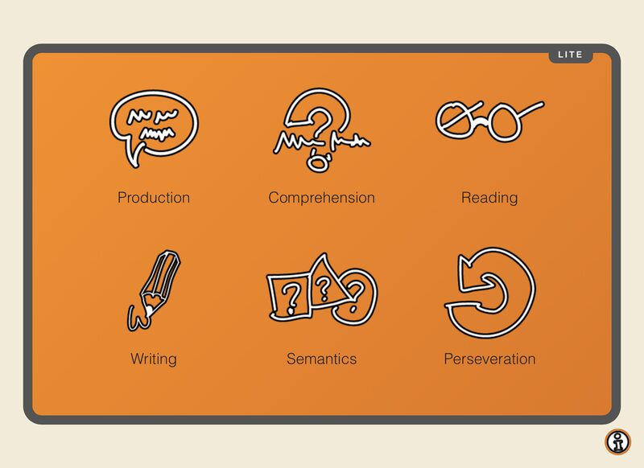
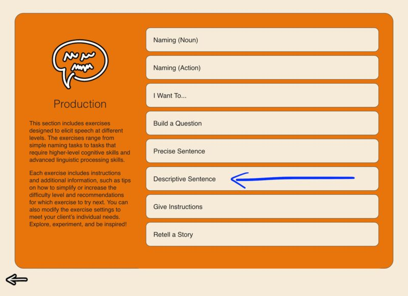
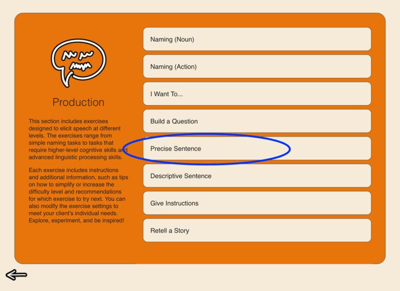
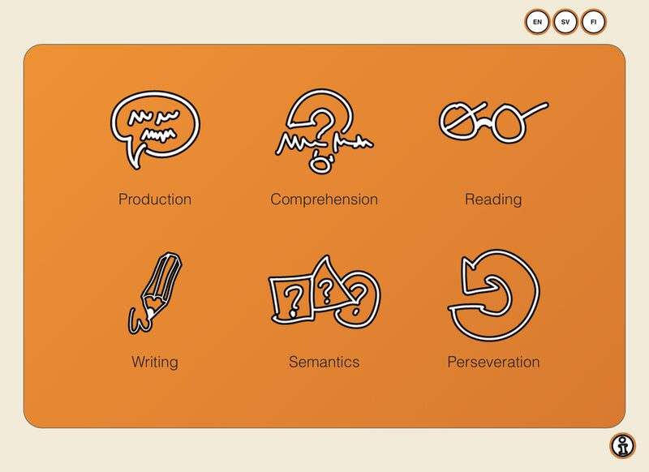

Blog
All The Things I Love About Speech Therapy With Adults

SanapsisLite SanapsisLite has had a refresh! The free demo version of SanapsisPro now mirrors the full app with a new look.
Let's add some color! Next up in the Speech Production category is Descriptive Sentence.
To the point! Next up in the Speech Production category is Precise Sentence. This exercise is all about precise, concise expression.
Summer season, fresh look In Finland, there is an expression about shedding your “winter fur” when you take the first swim of the summer.